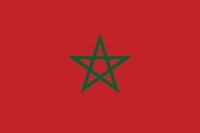

Marruecos 
Marruecos es un país situado en el noroeste de África, en la costa del océano Atlántico y el mar Mediterráneo. Limita al norte con el estrecho de Gibraltar y España, al este con Argelia y al sur con el Sáhara Occidental. Su ubicación estratégica ha contribuido a su rica historia y diversidad cultural.